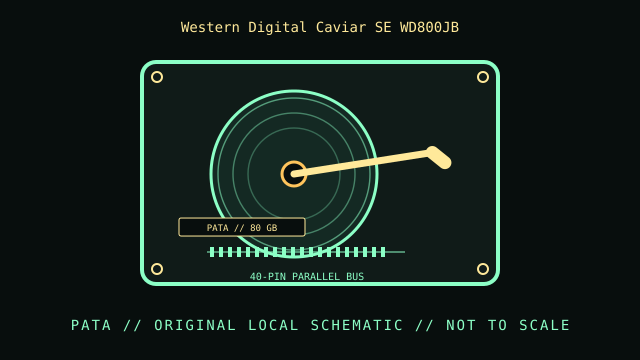

[ INDIVIDUAL COMPONENT // HARD DISK DRIVES ]
Western Digital Caviar SE WD800JB
Caviar SE EIDE, 80 GB model. This record describes this exact catalog identity; related capacities, interface variants, suffixes, and revisions may have different properties.

IDENTIFICATION: Compare the complete model and suffix on the label with the manufacturer document and actual drive inquiry. Family-level values do not describe every revision or the condition of a particular unit.
Part specifications
| Catalog subcategory | PATA / IDE desktop drives |
|---|---|
| Catalog identity | Western Digital Caviar SE WD800JB |
| Product family | Caviar SE EIDE, 80 GB model |
| Form factor | 3.5-inch desktop; exact external dimensions are not inferred from this class. |
| Interface | EIDE / PATA, Ultra ATA/100 family. |
| Capacity / performance / sectors | 80 GB; 7200 RPM; 8 MB buffer, per the Caviar SE model specifications. This WD800JB is distinct from other capacities and interface revisions in the family. |
| Compatibility | Requires PATA host support, 40-pin cable and supported BIOS/OS capacity. Check drive label for master, slave, or cable-select configuration. |
Handling, service & preservation
- Preserve the model label, PCB identifier, and jumper position before service. Avoid mounting shock and maintain a separate checksum-verified copy of any data.
- Before service, photograph the label, connectors, board markings, firmware/model identity, and installed carrier; note condition and any prior repair.
- Never open a hard disk outside a qualified clean environment. Mechanical shocks, contamination, and uncontrolled power cycling can worsen failure.
- For preservation, make independent verified copies and record checksums and read errors; SMART or self-test results are useful evidence but do not guarantee future reliability.
Model-specific source
- Western Digital Caviar SE EIDE Hard Drives Specification Sheet (manufacturer datasheet scan)Manufacturer datasheet copy hosted by an archival reference; the WD800JB is the 80 GB PATA model, not a SATA member of a later Caviar family.
Values above are limited to the cited exact-model or clearly identified model-family document. Record the document revision with any collection measurements.